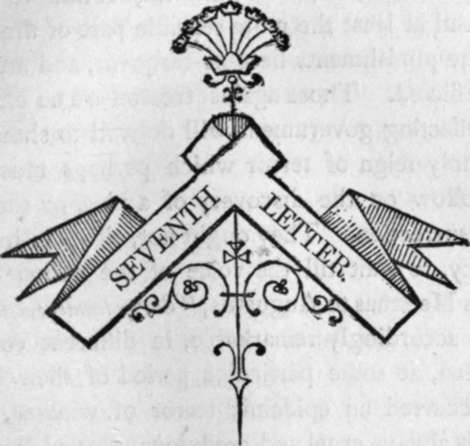

Seventh Letter
Description
This section is from the book "Letters On Demonology And Witchcraft", by Walter Scott. Also available from Amazon: Letters On Demonology & Witchcraft.
Seventh Letter
Penal Laics unpopular when rigidly exercised—Prosecution of Witches placed in the hand of Special Commissioners, ad inquirendum—Prosecution for Witchcraft not frequent in the elder Period of the Roman Empire—nor in the Middle Ages— Some Cases took place, however—The Maid of Orleans—The Duchess of Gloucester—Richard IIISs Charge against the Relations of the Queen Dowager—But Prosecutions against Sorcerers became more common in the end of the Fourteenth Century— Usually united with the Charge of Heresy—Mon-strelet's Account of the Persecution against the Waldenses, under pretext of Witchcraft—Florimond's testimony concerning the Increase of Witches in his own time—Bull of Pope Innocent VIII.— Various Prosecutions in Foreign Countries under this severe Law—Prosecutions in Labourt by the Inquisitor De Lancre and his Colleague—Lycanthropy— Witches in Spain— in Sweden—and particularly those apprehended at Mohra.
PIENAL laws, like those of the middle ages denounced against witchcraft, may be at 1 first hailed with unanimous acquiescence and approbation, but are uniformly found to disgust and offend at least the more sensible part of the public, when the punishments become frequent, and are relentlessly inflicted. Those against treason are no exception. Each reflecting government will do well to shorten that melancholy reign of terror which perhaps must necessarily follow on the discovery of a plot, or the defeat of an insurrection. They ought not, either in humanity or policy, to wait till the voice of the nation calls to them, as Mecaenas to Augustus, "Surge tandem, carnifex!"
It is accordingly remarkable, in different countries, how often, at some particular period of their history, there occurred an epidemic terror of witches, which, as fear is always cruel and credulous, glutted the public with seas of innocent blood—and how uniformly men loathed the gore after having swallowed it, and by a reaction natural to the human mind, desired in prudence to take away or restrict those laws which had been the source of carnage, in order that their posterity might neither have the will nor the means to enter into similar excesses.
A short review of foreign countries before we come to notice the British Islands and their colonies, will prove the truth of this statement. In Catholic countries on the continent, the various kingdoms adopted readily that part of the civil law already mentioned, which denounces sorcerers and witches as rebels to God, and authors of sedition in the empire. But being considered as obnoxious equally to the canon and civil law, Commissions of Inquisition were especially empowered to weed out of the land the witches and those who had intercourse with familiar spirits, or in any other respect fell under the ban of the church, as well as the heretics who promulgated or adhered to false doctrine. Special warrants were thus granted from time to time in behalf of such inquisitors, authorizing them to visit those provinces of Germany, France, or Italy, where any report concerning witches or sorcery had alarmed the public mind; and those commissioners, proud of the trust reposed in them, thought it becoming to use the utmost exertions on their part, that the subtilty of the examinations, and the severity of the tortures they inflicted, might wring the truth out of all suspected persons, until they rendered the province in which they exercised their jurisdiction, a desert from which the inhabitants fled. It would be impossible to give credit to the extent of this delusion, had not some of the inquisitors themselves been reporters of their own judicial exploits : the same hand which subscribed the sentence has recorded the execution.
In the earlier period of the Church of Rome, witchcraft is frequently alluded to, and a capital punishment assigned to those who were supposed to have accomplished by sorcery the death of others, or to have attempted, by false prophecies or otherwise, under pretext of consulting with the spiritual world, to make innovation in the state. But no general denunciation against witchcraft itself, as a league with the Enemy of Man, or desertion of the Deity, and a crime sui generis, appears to have been so acted upon, until the latter period of the sixteenth century, when the Papal system had attained its highest pitch of power and of corruption. The influence of the churchmen was, in early times, secure, and they rather endeavoured, by the fabrication of false miracles, to prolong the blind veneration of the people, than to vex others and weary themselves by secret investigations into dubious and mystical trespasses, in which, probably, the higher and better instructed members of the clerical order put as little faith at that time as they do now. Did there remain a mineral fountain, respected for the cures which it had wrought; a huge oak-tree, or venerated mount, which beauty of situation had recommended to traditional respect, the fathers of the Roman Church were in policy reluctant to abandon such impressive spots, or to represent them as exclusively the rendezvous of witches, or of evil spirits. On the contrary, by assigning the virtues of the spring, or the beauty of the tree, to the guardianship of some saint, they acquired, as it were, for the defence of their own doctrine, a frontier fortress which they wrested from the enemy, and which it was at least needless to dismantle, if it could be conveniently garrisoned and defended. Thus, the Church secured possession of many beautiful pieces of scenery, as Mr. Whitefield is said to have grudged to the devil the monopoly of all the fine tunes.
It is true, that this policy was not uniformly observed. The story of the celebrated Jeanne d'Arc, called the Maid of Orleans, preserves the memory of such a custorn, which was in that case turned to the prejudice of the poor woman who observed it.
It is well known that this unfortunate female fell into the hands of the English, after having by her courage and enthusiasm, manifested on many important occasions, revived the drooping courage of the French, and inspired them with the hope of once more freeing their country. The English vulgar regarded her as a sorceress—the French as an inspired heroine; while the wise on both sides considered her as neither the one nor the other, but a tool used by the celebrated Dunois, to play the part which he assigned her. The Duke of Bedford, when the ill-starred Jeanne fell into his hands, took away her life, in order to stigmatize her memory with sorcery, and to destroy the reputation she had acquired among the French. The mean recurrence to such a charge against such a person, had no more success than it deserved, although Jeanne was condemned, both by the Parliament of Bourdeaux and the University of Paris. Her indictment accused her of having frequented an ancient oak-tree, and a fountain arising under it, called the Fated, or Fairy Oak, of Bourle-mont. Here she was stated to have repaired, during the hours of divine service, dancing, skipping, and making gestures around the tree and fountain, and hanging on the branches chaplets and garlands of flowers, gathered for the purpose, reviving, doubtless, the obsolete idolatry which, in ancient times, had been rendered on the same spot to the Genius Loci. The charmed sword and blessed banner, which she had represented as signs of her celestial mission, were, in this hostile charge against her, described as enchanted implements, designed by the fiends and fairies whom she worshipped, to accomplish her temporary success. The death of the innocent, high-minded, and perhaps amiable enthusiast, was not, we are sorry to say, a sacrifice to superstitious fear of witchcraft, but a cruel instance of wicked policy, mingled with national jealousy and hatred.
Continue to: